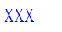

HY8003: IE6 IE7 IE8(Q) Firefox(Q) Opera(Q) 会自动修复被大括号包含的 style 属性的值
标准参考
'style' 属性用来指定当前元素的样式信息。当使用 CSS 书写内联样式时，样式特性定义应为 'name:value' 的形式。
关于 'style' 属性的详细信息，请参考 W3C HTML 4.01 14.2.2 Inline style information。
问题描述
各浏览器均有其代码解析的容错机制存在，这些机制由浏览器厂商制定且并不统一，由此导致 IE6 IE7 IE8(Q) Firefox(Q) Opera(Q) 中的代码容错机制会自动修复被大括号包含的 style 属性的值。
造成的影响
可能造成某些浏览器下无法应用到内联样式。
受影响的浏览器
| IE6 IE7 IE8(Q) Firefox(Q) Opera(Q) |
|---|
问题分析
针对此问题，我们使用以下测试样例来说明，分析以下代码：
<div style="{font-size:25px;color:blue;}">XXX</div>
各浏览器中表现如下：
| IE6 IE7 IE8(Q) Firefox(Q) Opera(Q) | IE8(S) Firefox(S) Opera(S) Chrome Safari |
|---|---|
|  |  |
规范中明确定义了使用 'style' 属性指定内联样式时，样式特性值格式应为 'name:value'；当值中出现大括号时，IE6 IE7 IE8(Q) Firefox(Q) Opera(Q) 做了容错处理，使样式可以正确应用到元素上，而 IE8(S) Chrome Safari Firefox(S) Opera(S) 则严格按照规范解析 'style' 属性的值，因此产生样式解析上的差异。
解决方案
不要在 'style' 的属性值中使用大括号等符号包含样式特性，直接书写样式代码即可避免此类问题。
参见
知识库
相关问题
测试环境
| 操作系统版本: | Windows 7 Ultimate build 7600 |
|---|---|
| 浏览器版本: |
IE6 IE7 IE8 Firefox 3.6 Chrome 4.0.302.3 dev Safari 4.0.4 Opera 10.50 |
| 测试页面: | style.html |
| 本文更新时间: | 2010-07-29 |
关键字
style brace 大括号